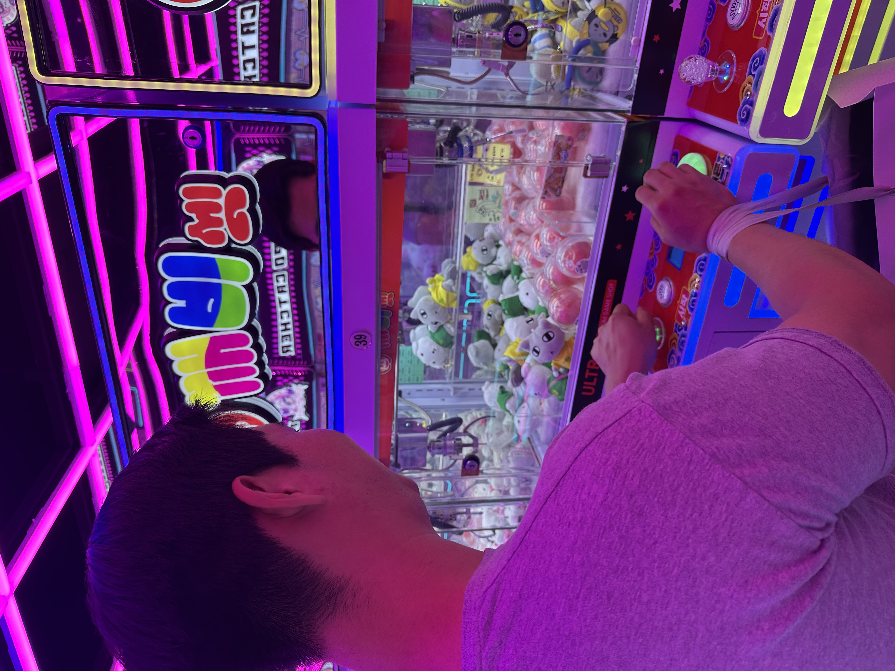
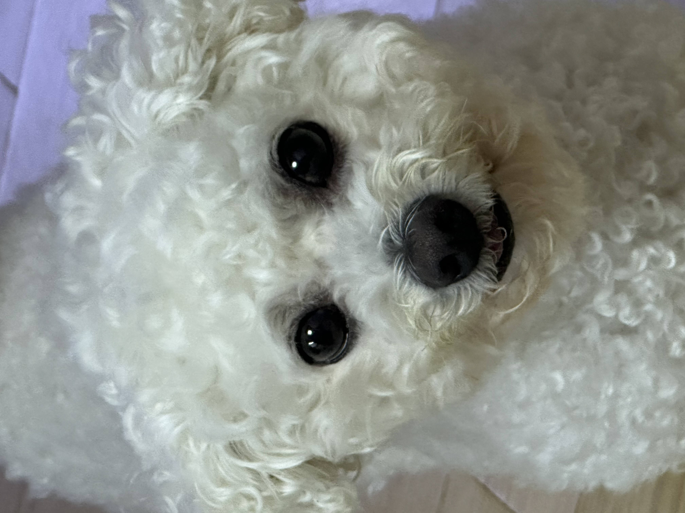
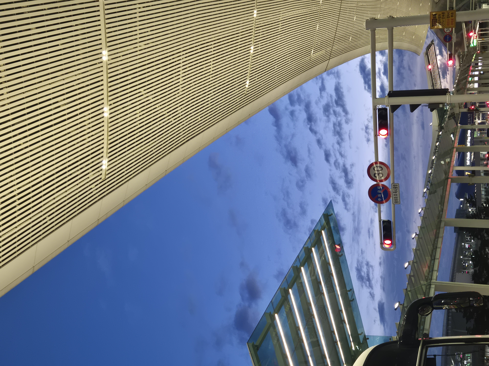

가상 데이터와 현업 데이터의 이질감 극복 경험
학습용 데이터와 비정형 필드 데이터 사이에서 발생하는 격차를 데이터 중심 AI 전처리 기법으로 돌파한 기록입니다.
"저는 이론적 배움과 실무 오케스트레이션의 연결고리를 탐구하는 지능형 데이터 엔지니어입니다.
문제의 본질을 집요하게 분석하여, 날것의 비정형 데이터셋을 유기적인 실용 서비스 파이프라인으로 설계합니다."
💡 사진 카드를 클릭하시면 브라우저 맞춤형 Lightbox 모듈을 통해 원본 스케일로 크게 감상하실 수 있습니다.

최근 귀여운 인형뽑기에 제대로 맛을 들였습니다. 집게의 찰나의 손맛에 빠져 야금야금 전 재산을 행복하게 탕진하고 있는 요즘의 힐링 취미 중 하나입니다.

맛있는 음식을 먹을 때 가장 짜릿한 행복을 느낍니다. 사진 기록을 남겨두는 것은 저만의 필수 루틴입니다.

강아지나 고양이 등 귀여운 반려동물들을 정말 좋아합니다. 지인들의 사랑스러운 반려동물 사진들을 보며 활력을 얻습니다.

새로운 도시, 탁 트인 하늘과 낯선 공기가 주는 여행의 해방감을 사랑합니다.
학습용 데이터와 비정형 필드 데이터 사이에서 발생하는 격차를 데이터 중심 AI 전처리 기법으로 돌파한 기록입니다.
문서 기반 분할 아키텍처를 구축하여 리소스 중복을 차단하고 대상을 이끌어낸 협업 매니징입니다.
후배 기수들이 매력적인 인덱싱 리드미와 커밋 컨벤션을 달성하도록 페이싱하는 교육 가치관입니다.
💡 스택 필터 버튼을 누르면 해당 기술을 적용한 핵심 연구 실적만 즉각 실시간 선별 정제 렌더링됩니다.
공간 접근성 다기준 평가 입지 선정 및 TSP 순회 알고리즘 최적 노선 모델 개발
13,000종 한자 클래스 불균형 해소를 위한 Loss 함수 설계 및 Swin V2 + SikuRoBERTa 서빙
비정형 텍스트 크롤링 원천 레이어 필터링 및 전처리 파이프라인 개발
수압 센서 데이터 로그 분석 기반의 이상 임계값 도출 및 정격 릴레이 제어 소프트웨어 탑재